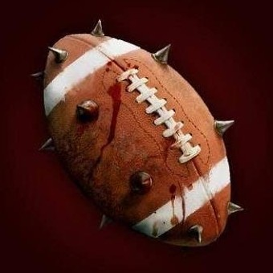

Demi-finales
Les Doux Sales Hauts Bardes (Neb) 0 - 1 Les Démons de Minuit (pouish)
1er tiers-temps
C'est parti pour cette demi-finale entre les Doux Sales Hauts Bardes et les Démons de Minuit. La bataille se jouera clairement au milieu de terrain ; les DSHB ont opté pour un 2-6-2 et les DM pour un 3-5-2. Première récupération et première attaque pour les Bardes et leur attaquant Zombi non chantant... et première sensation : dans un festival défensif les joueurs de Pouish assomment les deux attaquants des Bardes. Le zombi reste au sol un long moment, on ne savait même pas que c'était possible, Kralok et Riesewdub confirment qu'ils vont être durs à passer ! Les démons souffrent en milieu de terrain, avec notamment la sortie sur civière de l'elfe Alayssel mais leur défense est impériale et ce sont les Bardes qui souffrent en attaque. Et nouveau festival du Démon Kralok qui sort les deux attaquants Bardes, et oui nous ne rêvons pas, le grand théâtre se lève entièrement pour saluer l'exploit : le zombi sort sur civière sous les vivats de la foule !
Ce premier tiers temps se termine sans attaquants Bardes et toujours un gros combat en milieu de terrain avec une nouvelle sortie chez les démons, celle du gnome Yhinss. Grosse prestation donc des Démons en défense et domination des Bardes en milieu, aucune balle en attaque pour les Démons, un match d'usure violent comme on pouvait s'y attendre de la part de ces deux équipes.
2ème tiers-temps
Et c'est reparti pour le deuxième tiers-temps. Pas de changement de stratégie pour les deux équipes, mais les Doux Sales Hauts Bardes jouent à 9, 2-5-2 contre 3-4-3 donc. Dès l'engagement le demi-orque La Haine des DSHB donne le ton en retombant lourdement sur l'elfe Alayssel qui n'avait pas le ballon et qui sort une nouvelle fois sur civière... l'arbitre laisse jouer et les Démons de Minuit se retrouvent également à 9. Les attaquants des Bardes se lancent à l'assaut mais le gobelin Riesewdub sèche nettement La Découpe qui met du temps à se relever. C'est au tour du zombi de rester au sol sous les rires de la foule. Au milieu de terrain La Haine se venge et attaque un nouveau joueur sans ballon, mais cette fois l'arbitre sort le carton : une minute dehors. Distribution de mandales au centre du terrain, retour de La Haine qui fonce directement dans la mêlée et c'est le gnome Yhinss des Démons qui sort sur civière. L'arbitre hésite mais il laisse jouer, nous ne sommes pas loin du carton rouge pour G La Haine. Les bardes repartent à l'attaque et Kralok assomme une nouvelle fois le zombi avec une grande "Olléeee" dans le public. 6ème minute les Bardes sont à l'attaque... et nouveau festival "défensif" de Kralok qui laisse les deux attaquants Bardes au sol ; ils sont évacués par les soigneurs. Le public se moque grandement du zombi qui n'aura pas joué beaucoup.
Exactement le même scénario qu'au premier tiers-temps : les Bardes sans attaquants, les Démons qui s'en prennent plein la tête en milieu de terrain et aucun ballon dans le camp des Bardes. Les spectateurs s'ennuient un peu dans ce match qui pourrait se jouer sans ballon. À l'image de cet homme nu et peint entièrement en jaune qui tente de rentrer sur le terrain, nous attendons toujours l'ouverture du score !
3ème tiers-temps
Nous revoilà pour ce dernier tiers temps et la violence du début de match laisse des traces. Les Doux Sales Hauts Bardes jouent à 8 en 2-4-2 et sans leurs 2 attaquants titulaires, le zombi n'a pas pu être remis en état. Alors que les Démons de Pouish sont à 9 et tentent un changement de stratégie en 4-3-2 avec Kralok au centre du terrain pour répondre à G. La Haine. On commence par un traditionnel échange de coups en milieu de terrain et 3 joueurs restent au sol dont 2 du coté des Bardes rien qu'à l'engagement. Il faut attendre la 4ème minute pour que Bébert Sonne sorte de la mêlée alors que La Haine ne s'occupe pas du tout du ballon et assène un terrible coup à la nuque du gnome Yhinss des Démons. Par deux fois le cogneur des bardes a déjà sorti le gnome des démons, voilà donc la troisième et... Oh là là, les soigneurs font signe, la troisième est définitive : Ossap Yhinss † est mort ! Les arbitres se consultent, et voilà un nouveau carton bien mérité pour La Haine qui est exclu 5 minutes, soit presque jusqu’à la fin du match. Reprise du jeu et cette fois c'est Kevèjefère qui sort sur civière blessé par l'un des Wladislaw, je n'ai pas bien vu lequel. Kralok se retrouve tout seul au milieu du terrain, ça sent le roussi pour les Démons. Attaque des Bardes mais les attaquants remplaçants manquent de mordant, la balle est dégagée et revient en milieu de terrain. Kralok se défend bien seul contre trois mais il ne parvient pas à passer la balle à ses avants, on se dirige donc vers les prolongations. Dernière minute de jeu et nouveau festival de Kralok qui sonne Bebert et zigzague entre les 2 Wladislaw sous les acclamations du public. Il réussit cette fois à trouver le nain Prey Sy qui charge et assomme les deux défenseurs des Bardes et maaaaarque ! 1-0 pour les Démons, quelle action, ce sera le score final !
Très grande réussite des Démons, 1 attaque, 1 but, mais également très bon coaching de Pouish qui a bien joué ses atouts et surtout grandiose Kralok qui est sans conteste LE joueur du tournoi ! Voilà les Démons en finale, mais nous rappelons que le mercato est fermé et les joueurs de Pouish ne seront que 9 sur le terrain, sans remplaçant. Il faudra encore un grand Kralok pour l'emporter.
Par Leif
Les Casc-Frakass (ssbb) 1 - 2 Amicale des brasseurs bourrus (Zalfrost)
1er tiers-temps
La deuxième demi-finale oppose les Casc-Frakass de ssbb à l'Amicale des brasseurs bourrus de Zalfrost. Parmi les joueurs de ssbb on surveillera particulièrement le gobelin cervantes bien entendu, meilleur joueur et meilleur buteur du tournoi, mais également les demi-orques alexTroisJambes (qui revient chez les CF après plusieurs matchs chez les Gorilles) et Hodor, deux gros cogneurs. Chez Zalfrost, c'est le capitaine nain Henk Hachefer et le gobelin Gripsss la purge, deux joueurs du top 10, qui pourraient faire la différence. Et c'est parti ! MaxiB des CF gagne l'engagement, passe à alexTroisJambes qui lance à BaBardeJade qui réceptionne parfaitement, qui passe à Hodor. Mais le demi-orque ralenti le rythme ; il semble attendre l'elfe Gladruël Sildris de l'ABB qui lui fonce dessus précipitamment. L'action sera rapide : coup de coude du demi-orque sur la nuque de l'elfe et Gladruël † s'effondre. Les bras en croix de l'arbitre confirment le décès du milieu de terrain de Zalfrost. Le sablier n'a pas encore passé la première minute et déjà un mort. Ça promet ! Pourtant le reste du tiers-temps sera bien plus équilibré que ce que l'on pensait. Trois blessés chez les CF, deux blessés et un décès pour l'ABB. Deux cartons pour les CF, un pour l'ABB. L'équipe de Ssbb semble dominer un peu et s'est créé plus d'occasions que l'ABB, mais les joueurs de Zalfrost gèrent.
Le score est toujours vierge mais le match démarre très fort et les deux équipes confirment qu'elles ont clairement leur place en demi-finale.
2ème tiers-temps
Le match reprend avec les CF en 3-4-3 contre l'ABB en 2-6-2. Les soigneurs ont fait des miracles ou bien les joueurs sont des durs, mais il ne semble y avoir aucun blessé sur les bancs. AlexTroisJambes des CF prend la balle le premier puis la passe à son capitaine BouilZylCrane au milieu du terrain, mais le gobelin Gripsss la purge de l'ABB, après une longue course, lui saute dessus dans le dos. BouilZylCrane peine à se relever et se plaignant d'une forte douleur au niveau des vertèbres il demande à se faire remplacer. Ssbb fait entrer à sa place le demi-orque Rok HautLeVerbe. Le match reprend, Gripsss a la balle mais au lieu de slalomer entre les joueurs adverses il fonce droit sur Rok et lui saute dessus. Le demi-orque des CF n'a rien compris et ne peut plus respirer. Ssbb doit le sortir mais n'a plus de milieu de terrain remplaçant ; il joue donc en infériorité numérique maintenant et on n'a pas encore passé la première minute de jeu ! Zalfrost semble avoir une stratégie payante. À 6 contre 4 en milieu de terrain, les Casc-Frakass se font défoncer ! L'ABB attaque alors violemment, ils semblent déchaînés, alors que les CF commencent à paniquer et à commettre des fautes inutiles, comme Boobsaka qui se prend un carton à la fin de la 3ème minute. À la 4ème minute l'humain, profitant qu'ils jouent à 10 contre 8, Karl Osgon ouvre le score de cette demi-finale. Par la suite les CF semblent se reprendre et le tiers-temps se termine bien plus équilibré, l'ABB n'aura plus d'autres occasions.
Les joueurs de ssbb ont clairement loupé la reprise du match et à ce niveau de la compétition cela ne pardonne pas. L'ABB de Zalfrost en a profité et mène au score. Toutefois avec un seul but de différence tout est encore possible pour les CF. Les 10 dernières minutes vont être intenses !
3ème tiers-temps
La fin de match va être compliquée pour les CF de ssbb. Ils sont menés au score et n'ont que 10 joueurs en capacité de jouer ; leur capitaine BouilZylCrane par exemple n'a pas pu reprendre le jeu. L'ABB par contre semble au complet, avec trois remplaçants. Et l'arbitre siffle la reprise. L'elfe Eandël Finraïl attrape la balle en premier, mais BaBardeJade le charge violemment et la lui reprend. En supériorité numérique en milieu de terrain, les CF n'ont aucun mal à passer la balle à l'avant à alexTroisJambes qui seul perfore la défense de l'ABB et égalise dès la 1ère minute. Zalfrost a pourtant mis 6 joueurs en défense, mais ssbb semble avoir positionné 5 joueurs en attaque, la différence numérique est donc faible et l'expérience d'un cerventes ou d'un alexTroisJambes peut faire la différence. Et le score restera inchangé jusqu'au coup de sifflet, bien que les CF aient subit deux nouvelles pertes pour blessure et donc terminé le match à 8. L'ABB a le contrôle de la balle, mais ne parvient pas à la sortir de son camp. On sent qu'ils tentent beaucoup de chose, mais peu de passes ou d'actions sont courronnées de succès. La pression des CF est en effet énorme. Peut être une erreur stratégique de Zalfrost qui semble avoir demandé à ses joueurs de prendre beaucoup de risque, alors qu'à ce stade il aurait peut-être été préférable d'assurer.
Quoi qu'il en soit le score affiche 1-1 à la fin du temps réglementaire. Superbe remontée des CF qui n'ont jamais perdu espoir. On va donc avoir droit aux arrêts de jeu, avec la règle de la balle dorée : la première équipe qui marque gagne !
Prolongations
Les Casc-Frakass se positionnent en 2-5-3 et l'Amicale des brasseurs bourrus en 2-6-2. Le match se gagnera au milieu du terrain ! Et effectivement, le jeu se neutralise au centre durant les trois premières minutes jusqu'à ce que l'ABB trouve la faille, passe la barrière des CF et marque par l'intermédiaire de l'humain Karl Osgon.
Zalfrost qualifie donc son équipe pour la finale, où il affrontera les Démons de minuit, l'équipe favorite du public. Félicitations au coach. Ssbb quitte donc le tournoi mais la tête haute. Pour sa première participation, son équipe a démontré tout son potentiel : 4 joueurs dans le top 10, le gobelin cervantes meilleur buteur du tournoi, BaBardeJade maintenant meilleur récupérateur, et les Casc-Frakass qui, malgré leur défaite, reste en deuxième position des équipes préférées des spectateurs, devant l'ABB. C'est la chance qui a gagnée durant ces prolongations car cette équipe avait TOUT pour remporter ce IVème tournoi. Ssbb, un nom qui restera dans la mémoire de tous les amateurs de Balle Sanglante.
Par blueace
Finale
De nos envoyés spéciaux de la Gazette de Laelith, Jean Dimoitou et Téry Relent :
- Bienvenue à tous pour ce IVème Super Bol de Laelith. C’est un honneur pour nous de pouvoir commenter cette finale qui promet d’être magnifique. Le public, fin connaisseur, ne s’y est pas trompé, le Grand théâtre est plein à craquer, n’est-ce pas Téry ?
- Oh oui, mon petit Jean Didi, il y a de l’ambiance ce soir, ça va être la fête jusque tard dans la nuit dans les rues de Laelith. Et j’en profite pour remercier chaleureusement ces supportrices des Démons pour leur invitation d'après…
- Hum, hum, justement Téry, en parlant des équipes, qu’en pensez-vous ? Les favoris sont au rendez-vous ?
- Alors oui, Jean, d’un coté nous avons l’équipe favorite des parieurs et des spectateurs, les Démons de Minuit, et de l'autre il y a l'Amicale des Brasseurs Bourrus, une équipe un peu plus discrète, mais qui a fait également un très beau tournoi, ce n'est donc pas une énorme surprise.
- Et alors, Téry, peut-on se risquer à faire un pronostic ?
- C’est très difficile, à priori l'équipe de Pouish est favorite, mais elle se trouve très diminuée, avec seulement 9 joueurs sur la feuille de match, cela tempère donc les pronostics… À titre personnel, Jean Di, et en pensant à notre invitation d'après…
- Je vous coupe Téry car les équipes sont prêtes et le coup d'envoi va être donné !
Les Démons de Minuit (pouish) 1 - 3 Amicale des brasseurs bourrus (Zalfrost)
1er tiers-temps
- Et c’est parti avec les Démons en 4-3-2 avec Kralok en milieu de terrain et les Brasseurs en 4-2-4, qui délaissent un peu le milieu eux.
- Le halfelin Frisoti gagne l’engagement pour les brasseurs et il est aussitôt assommé par Kevéjefère.
- Les démons à l’attaque, la balle à Nekenieh et Buuuuuuuuuuuut ! Le gobelin des Démons ouvre le score, 1 minute de jeu, le ton est donné.
- Ça repart, Kralok s’empare du ballon, transmet à Nekenieh qui s’envole pour un deuxième but… et… Oh là là, quel plaquage du capitaine des Brasseurs qui casse littéralement en deux le buteur gobelin.
- Et regardez Jean, en même temps, les Briseroc s’occupent du deuxième attaquant des Démons qui tombe à terre sans ballon, l’arbitre intervient, carton jaune et expulsion pour une minute de Kurgan Briseroc.
- Oh là là Téry, les soigneurs parlent à l’arbitre et celui-ci met les bras en croix, Nekenieh † a inscrit son dernier but dans le tournoi, il est mort.
- Oui jean Didi, et surtout, les Démons ne sont plus que 8 sur le terrain.
- C’est reparti, les halfelins des Brasseurs ne font vraiment pas le poids en milieu de terrain, on voit mal comment ils vont pouvoir transmettre le ballon à leurs attaquants.
- Oui Jean mais pendant ce temps, à 1 contre 4 en attaque, Prey Sy se mange pain sur pain, les défenseurs Brasseurs ne le laisse pas respirer.
- Voilà, Prey Sy une nouvelle fois à terre, alors que la balle s’envole dans les tribunes derrières le banc des Démons.
- Que se passe-t-il encore ? Les spectateurs se battent pour garder la balle… Ah ça y est, d’un formidable lancer la balle revient chez les Démons.
- Oh oui, ce spectateur pourrait venir sur le terrain, vu son lancé.
- Oh là là Téry, le coach Pouish a pris la balle en pleine tête il est à terre…
- Que s’est-il passé ? C’est un accident ou un attentat ? Qui a lancé la balle ?
- Bon, plus de peur que de mal, le coach Pouish se relève, il titube un peu, mais ça va…
- Pendant ce temps là, le match à repris.
- Et bien repris, Grimaren Frisoti échappe à Kralok et transmet d’un formidable lancé, la première balle d’attaque pour les brasseurs.
- Le gobelin Riesewdub tombe sur La Masse et dégage son camp, le 1/2 orque des Brasseurs reste au sol.
- Balle au milieu du terrain ou Kralok fait de la bouilli de Frisoti, le premier halfelin se relève, mais son frère Bistaren est évacué sur civière.
- Et voilà Téry, c’est la fin de ce premier tiers temps, 1 seul but, mais beaucoup de coups.
- Oui Jean, un petit but d’avance pour les démons qui jouent à 8 mais les Brasseurs sont impuissants en attaque et surtout en milieu, nous allons voir comment le coachs vont réagir… Jean, vous avez vu le papier sur lequel j’ai noté le rendez-vous des supportrices ?
2ème tiers-temps
- Et c'est reparti avec les Démons en 3-3-2, il faut dire que Pouish n’a plus beaucoup d’options, et les Brasseurs qui reviennent à un traditionnel 3-4-3 après expérience plutôt ratée du premier tiers temps.
- Grimaren Frisoti gagne la balle pour les Brasseurs et… Kralok lui assène un énorme coup de poing sur le crâne, le halfelin sort sur une civière et est remplacé par son frère.
- Oui Jean, nous lui souhaitons bonne chance, 1 action, 1 blessé, ça commence fort.
- Ça repart, Kralok relance pour Alayssel, qui d’un formidable lancé pour son attaquant Prey Sy et… s’écroule… tout seul je crois, je n’ai pas vu l’intervention d’un Brasseur ?
- Oui, il a lancé trop fort peut-être ? Un peu frêle cet Alayssel quand même, il a fait beaucoup de banc pendant ce tournoi.
- Thorgas Briseroc chipe la balle sous le nez de Prey Sy et en profite pour donner un petit coup de boule au passage, l’attaquant des Démons est KO debout.
- Ça repart pour les brasseurs par Henk Hachefer qui est venu épauler ses coéquipiers au centre face à Kralok
- Apparemment une bonne idée de Zalfrost, Hachefer trouve Frisoti, le halfelin offre une belle manchette à son vis à vis gnome Ohayr Ayktus et passe à l’avant.
- Haf Koken passe à Karl Osgon. Osgon qui charge, Kevéjefère et Riesewdub sont balayés et Osgon maaaaaaaaaarque ! But de Karl Osgon !
- Et oui mon petit Jean Didi, les Brasseurs égalisent alors que les deux défenseurs des Démons restent au sol, le gobelin est même sorti sur la civière.
- L’effectif se réduit encore chez les Démons, à six sur le terrain ça va être compliqué.
- Ça repart, mêlée au milieu du terrain, Kralok est étrangement lent et les Brasseurs en profitent : Boruk Hachefer défonce littéralement le gnome Ohayr Ayktus qui sort à son tour sur la civière.
- Ouh là là, encore un de moins pour les Démons, Alayssel est de nouveau à terre, Kralok seul au milieu.
- Les Brasseurs à l’attaque, récupération de Kevéjefère pour les Démons, passe à Kon Pry
- Trak la masse arrache sans ménagement la balle au défenseur des Démons et passe à Haf Koken qui marque. But de Haf Koken, 2-1 pour les Brasseurs !
- Nouvel engagement, cette fois c’est Boruk Hachefer qui décroche quelques dents à l’elfe Alayssel qui sort sur la civière.
- Les Brasseurs de nouveau à l’attaque, festival de passes : Hachefer-Frisoti, Frisoti-la masse, la masse-Osgon, Osgon-Koken, Koken-la masse et but de Trak La Masse, 3-1 pour les Brasseurs.
- Et oui, Jean Didi, ça tourne à l’humiliation, sous les regards impuissants des cinq derniers joueurs des Démons sur le terrain.
- L’arbitre siffle la fin du tiers-temps alors que Kralok sortait de sa torpeur pour assommer deux joueurs des Brasseurs, le gnome et le halfelin.
- Je rêve Jean ou Kralok évite les nains ?
- Je ne sais pas Téry, en tous cas, la fin de tournoi va être très dure pour les Démons, 8 joueurs en lice dont 3 blessés, à 3-1 pour les Brasseurs, on ne voit pas comment Pouish va retourner la situation.
- Tiens moi à propos de retourner… pour la pause je vais me taper une petite…
- TERY ! NON !
- Quoi ? J’ai soif ! Je vais me boire une petite bière Balor, la bière des mecs forts !
- Ouf, j’ai cru…
- Quoi ?
- Rien.
3ème tiers-temps
- Voilà lancé le dernier tiers-temps du tournoi, les Démons en 2-3-2, les soigneurs ont retapé deux joueurs, mais ne sont quand même que 7, et les Brasseurs qui occupent le milieu avec un 3-5-2.
- Oui Jean, et avec Kralok en défense, Pouish semble résigné à accepter la défaite, il va juste essayer d’éviter un score fleuve.
- C’est parti, première attaque des Brasseurs, stoppée par la défense des Démons.
- La balle revient au centre, échange de coups et le fragile Aymal Alayssel reste à terre, saisi par un coup de tête sous le bras de Trak la masse, les Démons à 6 !
- Nouvelle attaque des Brasseurs, Haf Koken tente un débordement le long du couloir latéral.
- Intervention musclée de Kralok qui envoie directement Koken chez les soigneurs.
- Bistaren Frisoti remplace Koken… une petite seconde, car il est cueilli dès son entrée sur le terrain par un direct de Kralok qui le renvoi sur son banc, les soigneurs n’ont même pas besoin de faire rentrer la civière.
- Voilà, voilà Jean Didi, la messe est dite ! On a trois zones hermétiques sur le terrain :
- En attaque des Brasseurs, Karl Osgon se retrouve seul face à Kralok et Kon pry, et croyez-moi, il déguste, il est gardé à vue et à poings par les défenseurs Démons.
- Au milieu de terrain par contre les Démons à 2 contre 5 n'ont pas de solution, ils prennent coup sur coup et sont le plus souvent à terre ; s’ils s’en sortent vivants ce sera déjà bien.
- Et du coté de la défense des Brasseurs, les attaquants Démons sont assis, dégoûtés, ils n’ont aucune chance de toucher le ballon.
- Et oui mon cher Jean Didi, ce n’est pas le plus beau match de Balle Sanglante auquel nous avons assisté, les Démons ont fait illusion pendant quelques minutes grâce à un coaching un peu faible de Zalfrost au premier tiers-temps puis se sont écroulés ensuite.
- Oui Téry, l’équipe de Pouish est arrivée vraiment trop affaiblie pour cette finale, mais retenons qu’elles ont fait toutes les deux un magnifique tournoi.
- Bon, allez c’est pas tout ça, mais j’ai des supportrices Démones à consoler moi, je crois que je vais faire ça à la Janma Ribi Gar, par le chignon…
- Pfff, je ne cautionne pas Téry, et pendant que vous délirez, le mot de la fin à Krul Kralok qui fini par envoyer le dernier attaquant brasseur aux soigneurs.
- Ouais, un petit séjour au frais pour les fêtes offert à Karl Osgon !
- 3-1 score final, le Super Bol dans la poche de l’Amicale des Brasseurs Bourrus, bravo !
- La bière Balor va couler à flots cette nuit !
- Et nous, nous espérons vous retrouver pour le prochain tournoi, salut !
Par Leif
Classement des poules
Poule A
| Équipe | Coach | Joué | Gagné | Nul | Perdu | Points |
|---|---|---|---|---|---|---|
| Les Doux Sales Hauts Bardes | Neb | 6 | 4 | 2 | 0 | 10 |
| Amicale des brasseurs bourrus | Zalfrost | 6 | 3 | 2 | 1 | 8 |
| Les Gorilles Blancs | ylu | 6 | 1 | 4 | 1 | 6 |
| L'équipage du Manteau Doré | JouffyG | 6 | 2 | 1 | 3 | 5 |
| The Taka Team | Sasuken | 6 | 1 | 3 | 2 | 5 |
| Union sacrée | boblebuter | 6 | 2 | 0 | 4 | 4 |
| The Titou Team | titou | 6 | 1 | 2 | 3 | 4 |
Poule B
| Équipe | Coach | Joué | Gagné | Nul | Perdu | Points |
|---|---|---|---|---|---|---|
| Les Casc-Frakass | ssbb | 6 | 5 | 1 | 0 | 11 |
| Les Démons de Minuit | pouish | 6 | 5 | 0 | 1 | 10 |
| L'Olympique de Laelith | Ellef13 | 6 | 3 | 1 | 2 | 7 |
| Les vis et vices | Leif | 6 | 2 | 1 | 3 | 5 |
| Les Fers Libres | TomLG | 6 | 1 | 2 | 3 | 4 |
| Les Roulo Kompressor | Ripus | 6 | 1 | 2 | 3 | 4 |
| Lysa Hora | Niourgl | 6 | 0 | 1 | 5 | 1 |